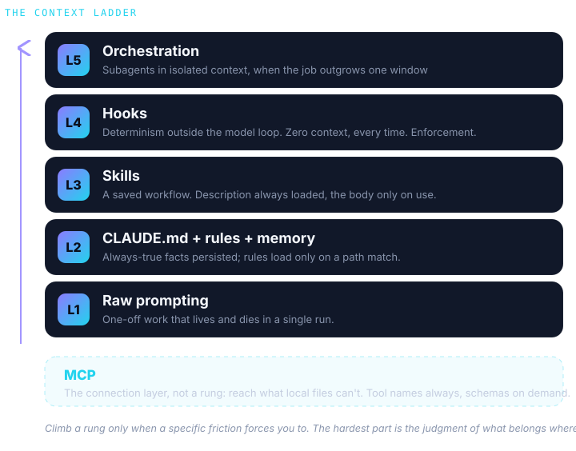
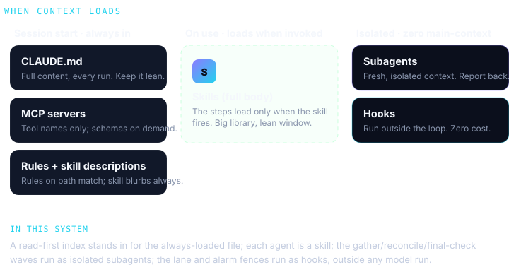

First principles - the context ladder
Adapted from "Claude Code 101: A First Principles Approach" (LevelUp Labs - Akshat Kharbanda, Aiza Hasib, Aishwarya Naresh Reganti). The framing is theirs; the scorecard at the end is this system measured against it.

Why the context window decides everything
An agentic assistant gathers context, takes an action, checks the result, and loops. The context window is finite, so every instruction loaded competes for the same space. Overload it and the model skims. Two failure modes follow, opposite in cause:
- Context overflow - inside one long run, older material gets crowded out and the model loses the thread.
- Convention drift - nothing said in a run survives it, so every run starts cold and a preference stated once is gone next time.
Every primitive below answers the same question: load the context that matters at the moment it matters, and keep everything else out.
The ladder, not a checklist
You climb a rung only when a specific friction forces you to.
| Level | Primitive | When | Loads into context |
|---|---|---|---|
| L1 | Raw prompting | One-off, exploratory, lives and dies in one run | the whole prompt |
| L2 | CLAUDE.md + rules + memory | A convention should always be known; a rule only sometimes | CLAUDE.md full every run; rules on path match; memory every run |
| L3 | Skills | A workflow you re-explain every run | description always; body only on use |
| L4 | Hooks | A rule that must hold every time, no exceptions | nothing - runs outside the model loop, zero context |
| L5 | Orchestration | The job outgrows one context window | subagents run in their own isolated context |
| - | MCP | The work lives somewhere local files cannot reach | tool names always; schemas on demand |
The decision rule, stated as friction to response: convention wrong twice goes in CLAUDE.md; the same prompt a third time becomes a skill; data the model cannot see connects through MCP; a side task that floods the window goes to a subagent; something that must happen every time becomes a hook; a second project that needs the same setup becomes a plugin.

The one non-negotiable is a lean CLAUDE.md. Everything else is added the moment the friction appears, never in anticipation of it.
The real power is in the combinations
No primitive works alone. CLAUDE.md holds the always-true line ("follow the contract"); the heavy reference lives in a skill that loads only when relevant. MCP gives the model hands; a skill gives it the knowledge to use them. A hook fires on a lifecycle event and triggers an MCP call at zero context cost. The judgment is deciding which primitive carries which job.

Scorecard - this system against the ladder
| Level | What this system does | Standing |
|---|---|---|
| L2 | A lean CLAUDE.md plus a read-first index the harness loads each run; one shared format contract instead of per-agent restatement | strong pattern |
| L3 | Each agent is a SKILL.md with a short description and on-demand reference files; per-skill evals | textbook |
| L4 | The determinism layer: a single-writer lane fence and an alarm-sync fence enforced outside the model loop, not by prose | see the hooks |
| L5 | A gather wave of parallel subagents, a reconciliation subagent, and a final-check subagent, each in isolated context | strong |
| MCP | Reminders, Calendar, mail, and chat connectors, matched by trailing tool name because server ids rotate | strong |
The lesson the audit surfaced is on the next page: a system can climb the whole ladder and still enforce its hardest invariants probabilistically. Prevention beats detection, and you subtract the checks that prevention retires.